Capturas reais do Babylon / Chromium. Sem publicação. Método, testes e limitações • Ciclo BA-0001 • Métricas.
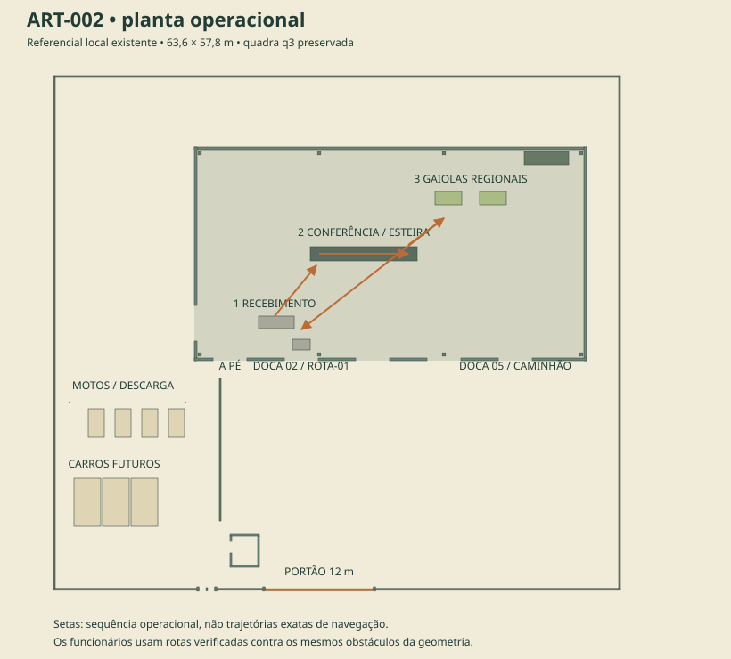
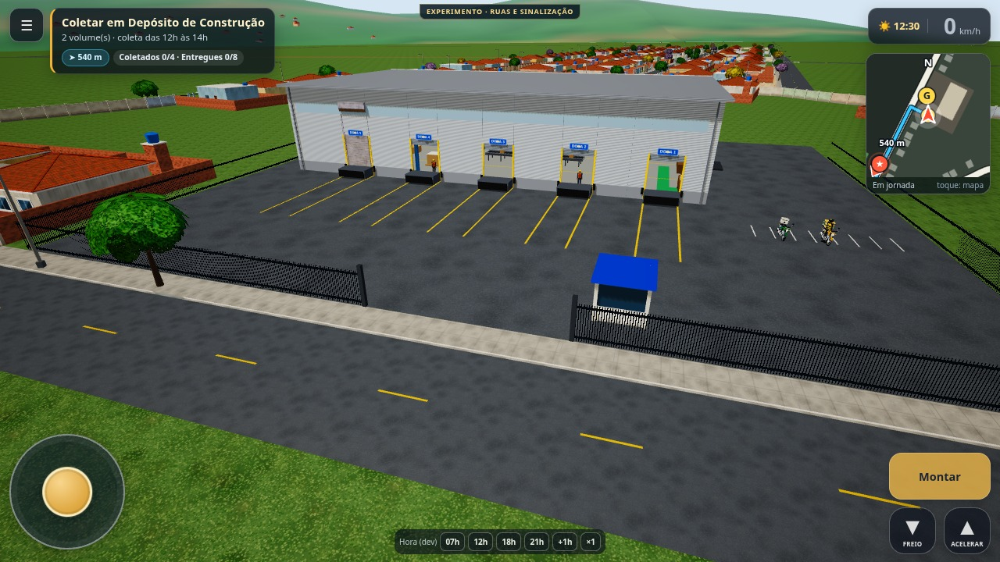
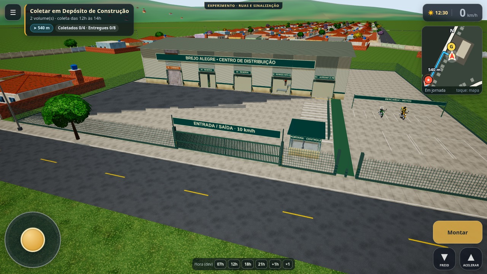
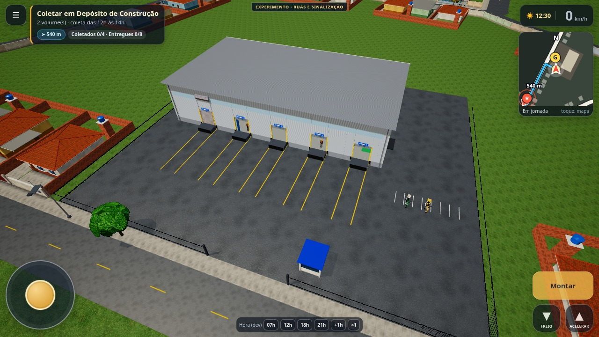
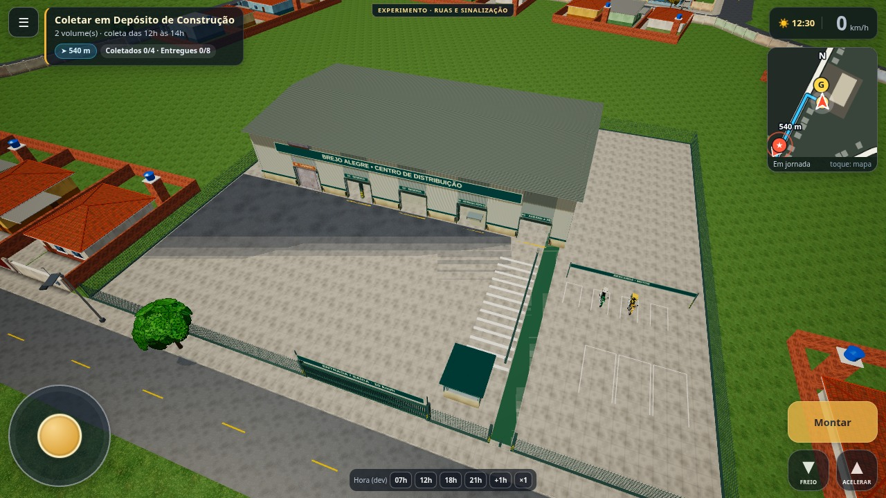
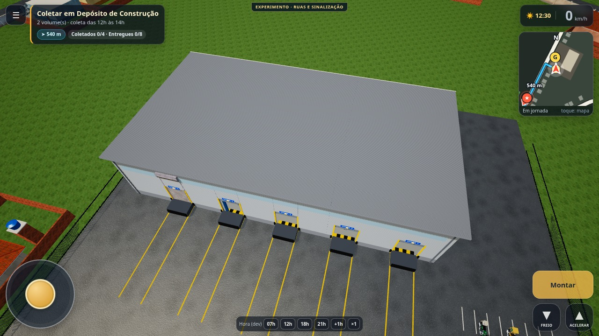
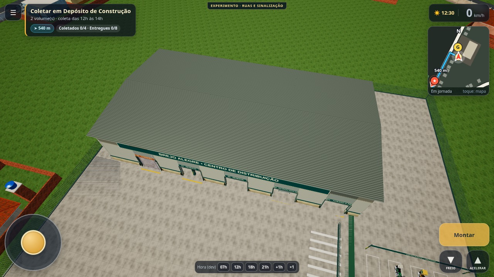
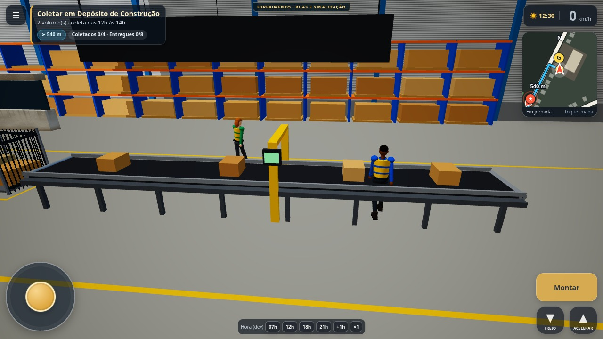
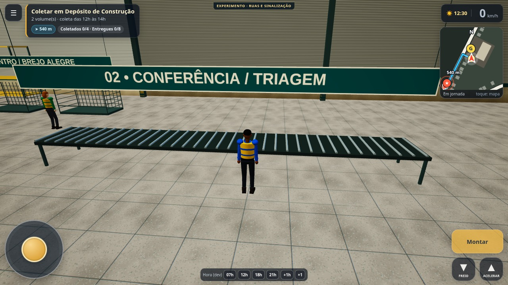
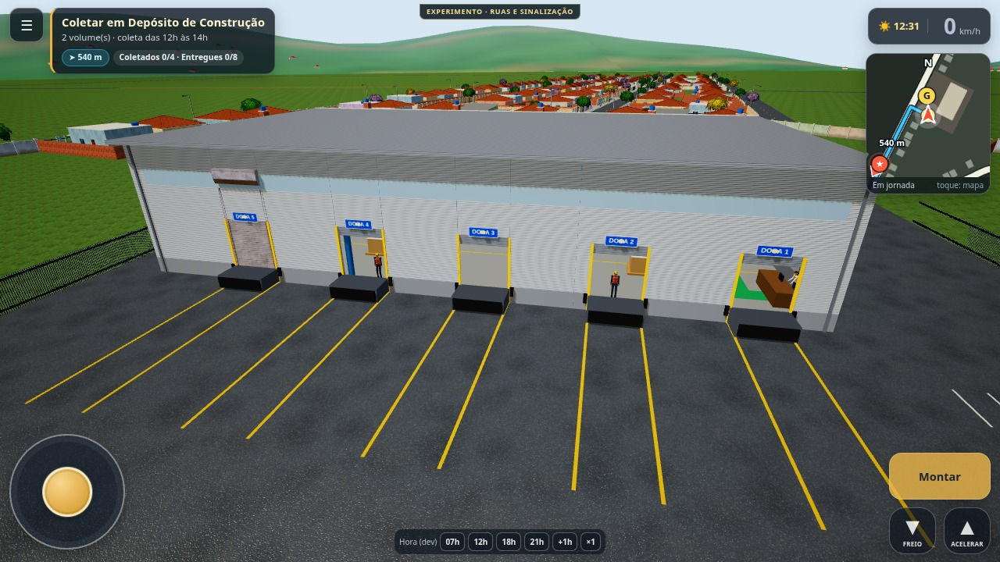
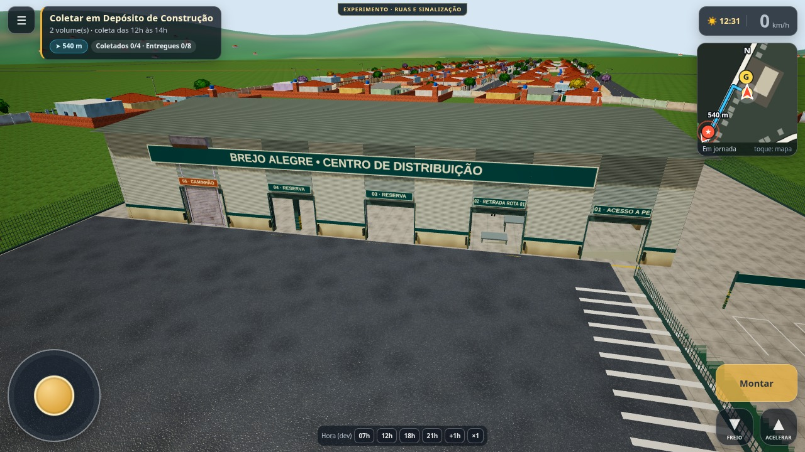
Fixture de dez volumes, perfil mobile emulado. Caminhadas longas por fixtures nesta série; controles reais no log de caminhada. A simulação processa tarefas válidas entre quadros. Não são caixas decorativas.
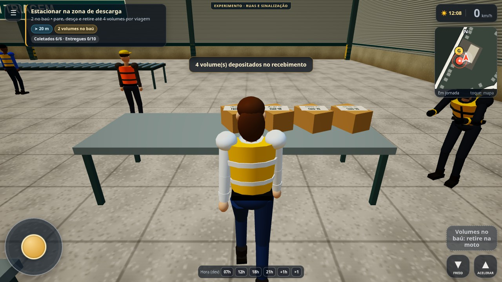
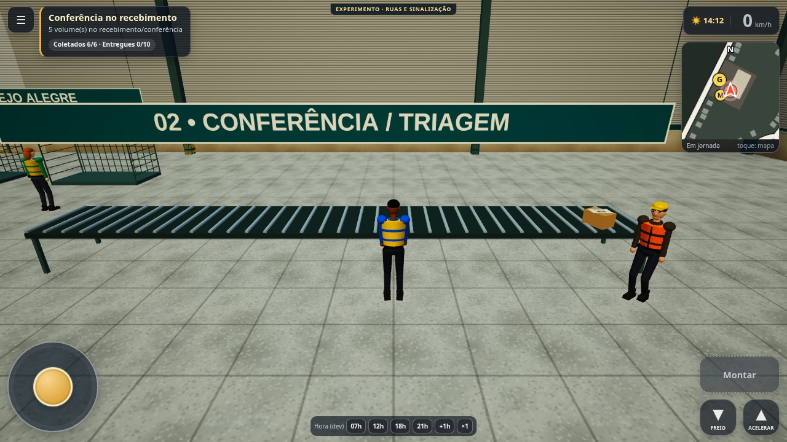
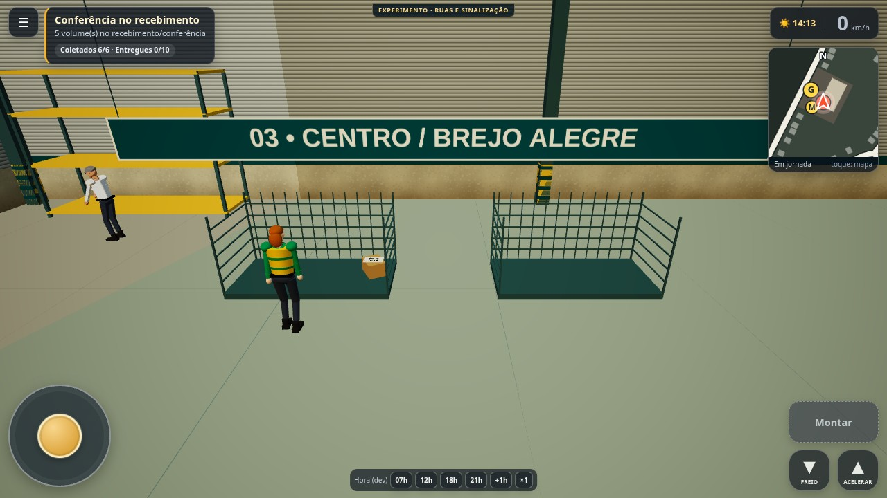
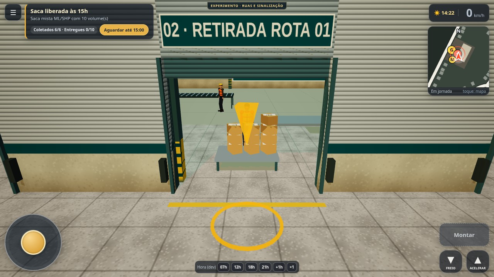